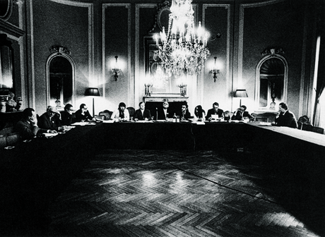
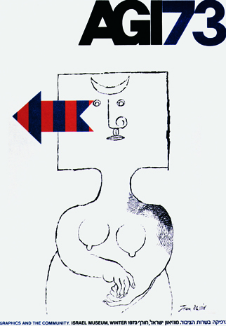

1970s : A Time of Consolidation
Donald Brun, one of the AGI’s five Founding Fathers, had taken over the chairmanship, the registered office moved from Paris to Zürich and the articles of association were re-formulated in accordance with the solid rules of Swiss law. That was all organized in a formal meeting in Ulm, in southern Germany, which, with its Hochschule für Gestaltung (HfG) had become the temporary capital of Functionalism. Unlike the Bauhaus, the link from modernistic theory to industrial practice had been fully made in the instruction at the HfG (1953–68). Based on the ‘dream’ of Universal Human Rights (UN: 1948), ‘all people are essentially equal’, the HfG focused on the Ideal Product, intended for Everyone. Design should not be for an elite public. Averse to all trimmings, it should simply work on the idea of ‘less is more’ and therefore be as accessible and affordable as possible.
What Is A.G.I?
Inwards
The AGI unites the world's leading graphics designers and artists in a professional club of common interest and achievement. It is an élite club. Its members have been collectively responsible for the identity design of most of the world's top corporations and institutions as well as for countless examples of globally known packaging, publications, illustration and posters. The AGI provides for friendship, mutual respect and the enjoyment of the company of the like-minded - even reassurance in the face of a sceptical world. Ideas and experiences are exchanged informally at periodic meetings and by letter, email and fax. All members may also attend the AGI Congress, which involves a more formal business and social agenda. A different country hosts the Congress each year and presents its own history, members' work and professional achievements in art, commerce and education.
Outwards
The role and importance of the AGI within the professional field of graphic design is clearly different from the existing national and international professional organisations. In recognition of this context, the AGI is also a platform for activity. It has a task to tell the world and change it. Through the relationships and interaction of its members, the AGI promotes graphic design in lectures, education and publishing. It encourages knowledge and understanding among the young and fosters contacts with other institutions, organisations and companies involved in graphic design.
The AGI holds exhibitions of members work which are highly influential in disseminating new forms, techniques and ideas. There is a book publishing programme based on the thoughts and works of members. There are contacts with colleges and schools, government bodies and commercial institutes, all aimed at promoting graphic design and visual literacy.
Backwards
In the 1940s, commercial artists, mural makers, typographers, printmakers, art directors, illustrators and poster designers increasingly realised their common bonds, and the modern profession of graphic design began to be defined. In 1951, five graphic artists - two Swiss and three French - decided to formalise their relationship into some sort of association. Their idea was simply to share common interests and friendships across national and cultural borders.
It was a notion that soon attracted leading exponents of the graphic arts from elsewhere in Europe and in the USA. In 1952 the Alliance Graphique Internationale was incorporated in Paris with 65 members from 10 countries. The first AGI exhibition was held in Paris in 1955 and in 1969 the headquarters moved from Paris to Zurich. Student seminars were introduced in 1979 and the first Young Professional AGI Congress was held in London in 1994.
Forwards
An explosion of global communications is changing the world. Powered by media like television and the internet, a common visual language is forming as symbols and images become the world's universal vernacular. The original members of the AGI were responsible for creating many elements of this new language. As the world turns, their successors - exponents of the traditional and the new media - are becoming members of the AGI themselves. Today there are around 370 from Africa, America, Australia, Asia, the Middle East and Europe - 32 countries in all.
Membership of the AGI requires reputation and achievement of the highest order and commitment to the processes of visual learning and perception, unfettered by cultural differences. The AGI remains dedicated to the universal aspect of graphic design as a means of communication and information, and its ideals remain relevant to the new world of visual literacy which its members have helped to bring about.
1973 : Jerusalem
×

Jerusalem was planned for 1973, but the Yom Kippur War proved to be of higher priority to the young state of Israel. The congress was organized by Dan Reisinger and Jean David. Pentagram had prepared a thematic exhibition. In showing works from the 1950s, 1960s and early 1970s, the idea was to make it clear what graphic design can do for international, national and local governments, politics, cultural and charitable organizations and education. It was not only a historical overview; the intention was to show the style differences and the breadth of activities. On one hand, the strength and unity of the ‘Swiss’ International Style came to the fore and, on the other, the personal, more painterly work of designers from Poland and Czechoslovakia. The exhibition was shown in Amsterdam, but ended up in the Israel Museum in Jerusalem in 1974, after all, where it remained in the permanent collection, as a gift from AGI. Illustrative poster available from Reisinger!
<
>
1974 : Warsaw
×

In 1974, AGI travelled to Warsaw, on the occasion of the 4th Poster Biennale. The Polish capital had opened the first specialized poster museum in the world in 1968. Josef Mroszczak was the driving force behind that initiative. During the Biennial, there were special one-man exhibitions for the three winners in 1972. The company was then invited to Mroszczak’s dacha, somewhere in the interior of Poland. The coach got lost, meandering for four hours through the countryside. But it was certainly a memorable event! A major exhibition of the work of 107 AGI members was made possible by sponsor Olivetti. The show travelled from Milan (1974), via Brussels (1975) and Montreal (1976) to Stuttgart (1977). Franco Grignani wrote the foreword to the accompanying book. He identified a number of significant changes since the previous AGI exhibition in Milan, 13 years earlier. ‘This exhibition of communication graphics should be seen as the most complete and important in the world. It introduces a new character language, visible in numerous “exhibits” and various media: posters, logotypes, trademarks, advertisements, layouts, magazine design, stands, textile designs, etc. ...Yesterday, Cubism gave us a new concept of the synthesis of form. Today, it would appear, in its turn graphic design is inspiring free art. With the common denominators in their work and through their personal experience, 107 AGI members from the USA to Japan are setting objective rules for visual information and visualization. Naturally, it is not possible to make conclusive regulations for a field where discovery and innovation are such primary factors. But there is a practical basis, which derives its validity from its general acceptance. AGI has now become a platform for the exchange of professional experience and areas for concern. There is an awakening of the conscience of intellectual and social responsibility.’
<
>